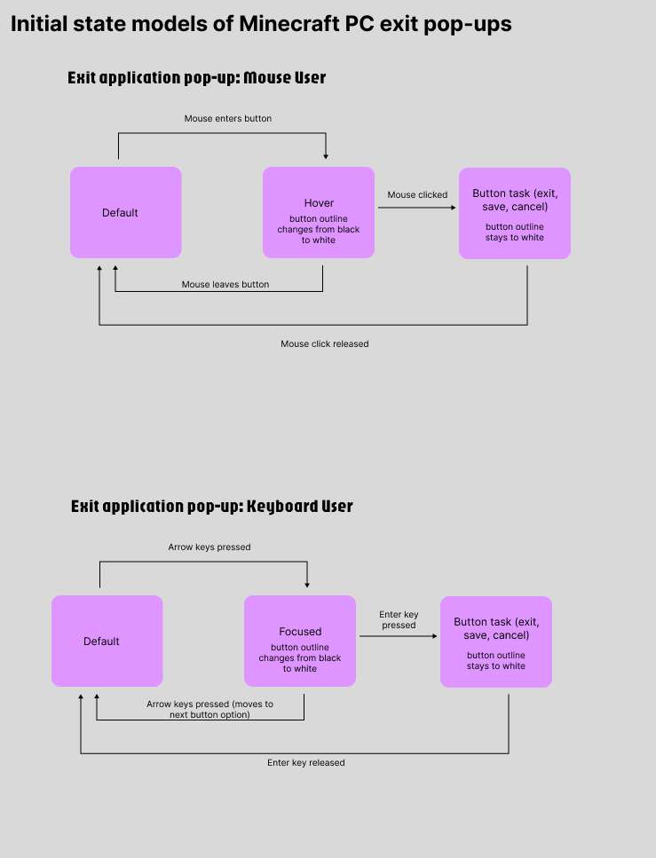
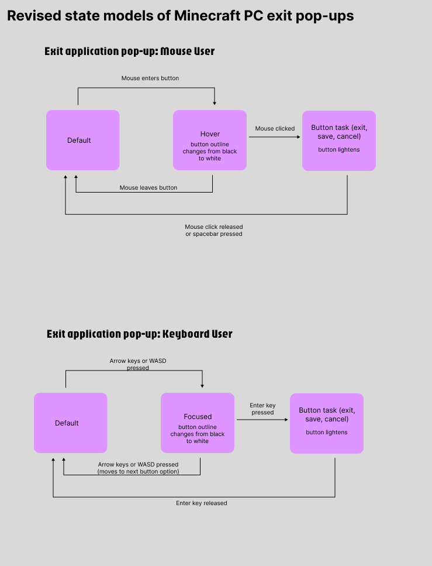
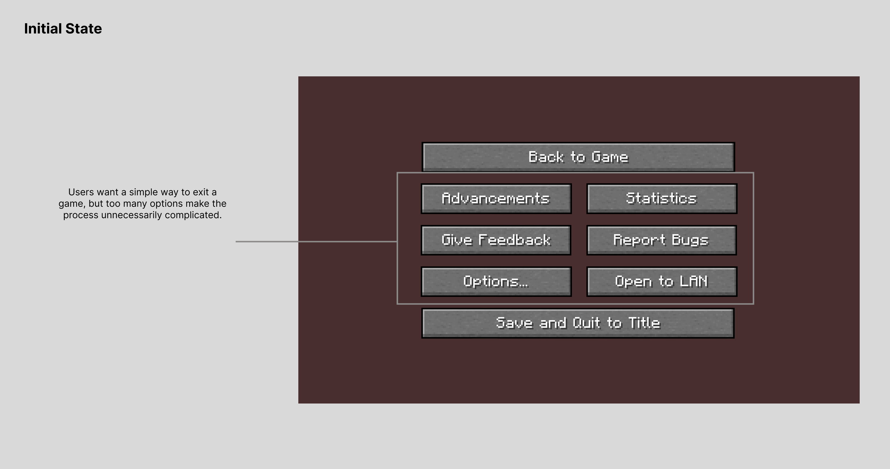
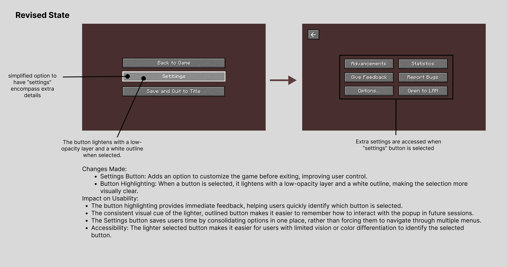

"Exit the application" popup box in Minecraft, Photoshop, Word
CS1300
Part 1: Input
Reflection:
1. Exit application popups vary in complexity across applications. Minecraft uses both mouse and keyboard with more complexity, Word and Photoshop offer simpler options.
2. Minecraft requires the Esc key; Photoshop and Word use mouse clicks or keyboard shortcuts. Navigation in Minecraft is more intuitive.
3. Minecraft's UI becomes easier with use but remains complex. Word and Photoshop are straightforward and user-friendly.
4. Photoshop is the most accessible, with clearly labeled buttons and fewer distractions. Minecraft’s complexity can pose challenges.
Part 2: Output
Focus Order Considerations:
Minecraft: Navigation through arrow keys and Enter; includes sound cues.
Photoshop: Menu navigation via mouse or keyboard.
Word: Fully navigable with mouse and keyboard.
Part 3: State Models & Component Redesign
Exploring the experience of mouse vs keyboard users.


Minecraft Exit Popup Redesign


Part 4: Reflection
- Original popup was cluttered; difficult for keyboard-only users.
- Redesign reduced options to three core buttons.
- “Settings” expands for advanced options, decluttering the main menu.
- Highlight effect improves focus visibility for low-vision users.
- Better keyboard accessibility benefits motor-impaired users.
- Simplified layout makes the UI more intuitive and inclusive.